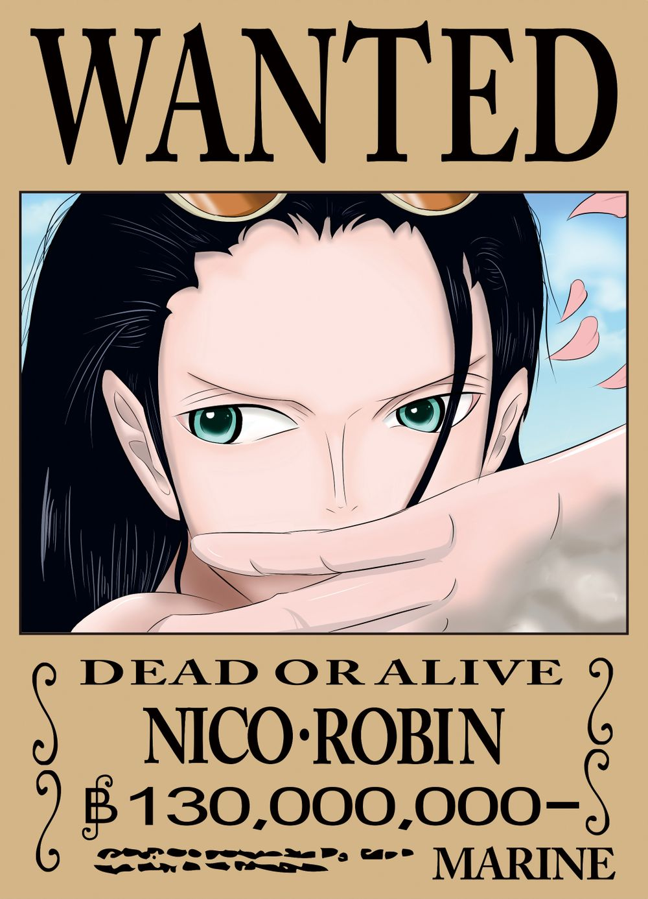

《人物简介》罗宾

名字来源
1、罗宾（Robin）的英文意思则为知更鸟。
2、罗宾的外型似埃及艳后，所以职业才被设定为考古学者。
3、参考自漫画《七龙珠》里的人物琪琪。
4、参考自《蝙蝠侠》里的超级英雄罗宾的名字。
5、R（Reconcile ）意思是 使和好的，调解。没错，罗宾是草帽一伙的调节之花。每当他们有矛盾时，她都会帮他们解决，对于草帽一伙和她的性格差异（一船人除了她，都比较脱线），也没有任何不安，而是努力融入他们的群体。
O（Oasis）解释为1、（沙漠中的）绿洲2.、在枯燥或不愉快环境中的）胜地。罗宾在每个人有困难的时候都伸出手来帮助他，因此她是草帽一伙中的支柱。
B（Bright）明亮的。是的，罗宾的心是明亮的。即使她有悲惨的童年和黑暗的身世，她的心仍是圣洁的。所以她才用全部的精力去寻找历史正文，这说明罗宾仍没有放弃自己。
I（Innocent ）洁白的。罗宾是草帽一伙当中洁白的。即使她有惊人的智慧，强大的实力。所以，她有着较其它OP女性而言，更为独特的神圣光环。
N（Noble） 高贵的，贵族的。罗宾是《海贼王》这部漫画（动画）中最有贵族气质的。彬彬有礼的态度，温柔优雅的微笑，使人不知不觉地就被迷住了，跟可雅那种单纯的笑，娜美开朗的笑，薇薇那种略做坚强的微笑，多米诺（推进城副看守长）礼貌的笑，女帝傲慢的笑，小萨蒂（推进城狱卒长）娇蛮的笑是完全不同的，罗宾有着迷人的疏离感，不易察觉的魅力。
简介
妮可·罗宾（ニコ·ロビン ，Nico·Robin）是日本漫画《海贼王》中的女二号，草帽海贼团的考古学家，出生在西海的考古学之岛“奥哈拉”，年仅8岁就被悬赏千万的奥哈拉幸存者。是拥有“花花果实”的恶魔果实能力者，能让身体的任何部位像开花一样绽放在视线范围内的任何有形体的事物上并作出攻击或其他用途。目标是找到真正的历史正文，绝不饶恕践踏历史文的人。。
角色特征
草帽海贼团的考古学家，初登场于漫画单行本第13集，原为地下暗杀组织巴洛克工作社的副社长兼最高司令官，代号为Miss.all sunday。在巴洛克解散后，加入草帽海贼团。擅长考古学以及暗杀，学识渊博，对于世界政府、海盗、航海一事都知道的很详细，有时会用能力去偷听岛上居民所谈论的话，也因此常替海贼团收集到不少重要情报。目标是找到真正的历史正文，其中有一半的原因是为了完成母亲的心愿，个性冷静，就算遇到暴风雨，也能安然坐在椅子上看书。绝不饶恕践踏历史文物的人。因为小时候的经历而常会联想一些不吉利的事物（分尸、被掐死、谋杀等），相当喜欢动物，只要被罗宾摸过，不管是什么动物都会变得很温顺。运动神经超群、也很会玩棋牌游戏（金狮子篇中与乔巴、弗兰奇、布鲁克打纸牌连胜69次），喜欢的岛屿是秋天的春岛，认为这是适合慢慢看书的季节。
果实能力
罗宾是超人系“花花果实”能力者，能让身体的任何部位像开花一样长在视线范围内的任何有形体的事物上并作出攻击或其他用途。此用途在偷袭方面相当具有效果。攻击招式数字名称是西班牙语，“フルール”（花开）则是法语“花”的意思，战斗时，周围会有花瓣在飞舞。花开从视线范围内有形的物体上，长出任意数量轮花来形成不同的用途。作者尾田荣一郎表示，罗宾原本最大的极限为两百只手脚，在第二部的剧情中，罗宾已经可以制造出一万只以上的手脚，并且在海中短暂施展能力，甚至可借着能力达到分身的效果。